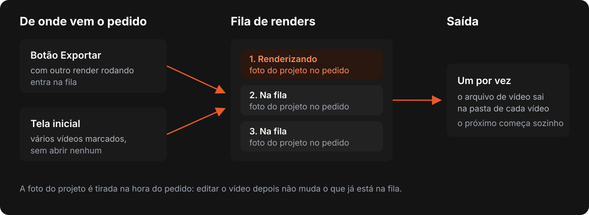
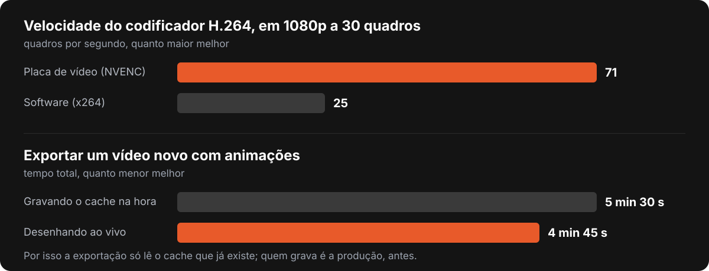

Nardoto
NardotoNardoto Editor 1.2.0: fila de renders e motion em cache
A versão 1.2.0 do Nardoto Editor traz fila de renders, animações gravadas antes da exportação, preview estável com fotos e um jeito de o Studio saber a versão.

O Nardoto Editor é o editor de vídeo que o Nardoto Studio usa para montar a timeline (a linha do tempo com narração, imagens e música). A versão 1.0.0 saiu em 10 de outubro de 2026. A 1.2.0 saiu em 17 de novembro, com 16 commits entre uma e outra. Commit é cada alteração registrada no histórico do código. O último deles concentra o trabalho: 20 arquivos, 1.011 linhas novas e 100 removidas.
Quase tudo nesta versão responde à mesma pergunta: o que acontece quando há vários vídeos para exportar, e não um só.
Vários vídeos, uma fila
Até a 1.0.0, pedir uma exportação com outra em andamento não tinha um bom destino. Agora o pedido entra numa fila de renders (render é o processo de transformar a timeline num arquivo de vídeo). O botão Exportar avisa quantos estão esperando, a janela de andamento lista os próximos na ordem e dá para tirar da fila um vídeo que ainda não começou.
Um detalhe pesou no desenho: cada item guarda uma foto do projeto no momento do pedido. Sem isso, editar o projeto aberto enquanto ele espera mudaria o que sai no arquivo. Com a foto, o vídeo exportado é o que existia quando a pessoa clicou.
A tela inicial também entrou na fila. Dá para marcar vários vídeos e mandar renderizar todos sem abrir nenhum. O arquivo de cada um sai na pasta do próprio vídeo, com as escolhas da última exportação.

Animações gravadas antes
As animações em motion graphics são páginas desenhadas por código. Na exportação, o editor precisava esperar um navegador embutido desenhar cada quadro. Num vídeo com 20 animações, só essa montagem de cena custava 74 segundos.
A saída foi gravar cada animação como um arquivo de vídeo comum, um cache (uma cópia pronta, guardada para não refazer o trabalho). A exportação lê esse arquivo em vez de desenhar de novo. A prévia e a miniatura que o Studio mostra saem do mesmo cache, sem um segundo render.
A primeira tentativa foi pior do que não fazer nada. Gravar na hora da exportação as animações que faltavam levou 5 minutos e 30 segundos, contra 4 minutos e 45 segundos desenhando ao vivo. Por isso a exportação só aproveita o cache que já existe no disco. Quem grava é a produção, em segundo plano, ao terminar cada animação. O que não ficou pronto segue desenhado ao vivo, como antes.
Onde o tempo da exportação ia embora
Para saber o que acelerar, a exportação ganhou um cronômetro por etapa, gravado num arquivo de registro a cada 10 segundos. Sem ele não dava para dizer se a lentidão vinha da montagem da cena, da placa de vídeo, do codificador ou da mixagem do áudio. As mudanças vieram dessas medições.
| Mudança | O que foi medido |
|---|---|
| H.264 pela placa de vídeo (NVENC) antes do codificador em software | 71 quadros por segundo contra 25, em 1080p a 30 quadros |
| Áudio mixado e codificado numa linha de execução própria | Cerca de 30 segundos a menos numa exportação de 12 minutos e 37 segundos |
| Quadros decodificados com antecedência | 10 quadros adiantados, eram 2 |
| Animações lidas do cache | Fim dos 74 segundos de montagem de cena no vídeo com 20 animações |
Quando a placa de vídeo falha no meio do caminho, o editor troca o codificador pelo equivalente em software, com as configurações de qualidade do próprio codificador. As da placa não valem para ele.

O preview que ficava borrado sozinho
Numa timeline só de fotos, o preview em qualidade automática descia para 25% e ficava subindo e descendo, borrado e lento. A medição mostrou de 40 a 490 milissegundos por quadro no modo automático, contra menos de 1 milissegundo em qualidade total. A máquina dava conta; o problema era o próprio ajuste.
As fotos ficam em cache por arquivo e por tamanho. Mudar a escala troca o tamanho, então os quadros seguintes releem e redimensionam todas as fotos. O ajuste automático via esses quadros lentos, concluía que a máquina não acompanhava e mudava a escala de novo. Cada mudança provocava a próxima. A correção tem uma linha de regra: depois de trocar a escala, os 6 quadros seguintes não contam.
Um programa sem número de versão
O executável do editor não carrega a versão num lugar que outro programa consiga ler sem abri-lo. Até aqui, o Studio reconhecia um editor antigo procurando no arquivo uma opção de linha de comando que só as versões novas têm. Funciona para separar "monta vídeo" de "não monta", mas não para dizer "saiu uma versão nova".
A partir da 1.2.0, o instalador grava um arquivo de texto com a versão ao lado do executável. O Studio lê esse arquivo e, quando a instalação ficou para trás, avisa no começo da produção e ao abrir o editor, sem travar nada. Instalação sem o arquivo conta como anterior.
O que surpreendeu na publicação
O número 1.1.0 foi pulado. Ele já tinha sido usado num instalador de teste que nunca foi publicado, e reaproveitar o número deixaria duas coisas diferentes com o mesmo nome.
Trocar a versão custou uma recompilação completa: 362 arquivos de código, pouco mais de meia hora. O pacote final tem 1.860 arquivos e 350 MB, que viram um instalador de 104 MB. O teste antes de publicar foi extrair o instalador e rodar o editor sem janela, num ambiente sem as ferramentas de desenvolvimento. Ele respondeu como versão 1.2.0, com as 9 ferramentas de controle disponíveis. Instalação completa numa máquina limpa ainda não foi feita.
O susto veio do Mac. O Studio baixa o editor por um link fixo que aponta sempre para a publicação mais recente. A 1.2.0 só tem instalador de Windows, então o link do Mac passaria a dar erro. A solução foi reenviar na publicação nova o mesmo arquivo de Mac da 1.0.0, e dizer isso nas notas.
O que vem depois
O editor ainda não se atualiza sozinho, e o aviso de versão nova depende de uma atualização do Studio para chegar a quem usa. O Mac continua na 1.0.0. A história do render por dentro, com a placa de vídeo e o FFmpeg, está em O render do Editor: GPU no Windows, FFmpeg no Mac.
Escrito por Tharcisio Nardoto, engenheiro civil e criador do Nardoto Studio.